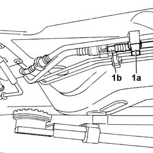
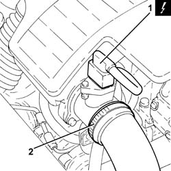
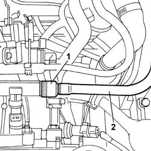
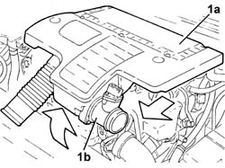
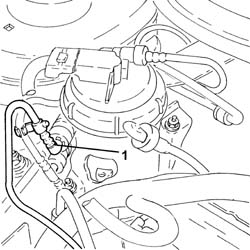
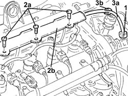

1040B32 front fuel delivery line - r r
- Path
- Procedures > 10 ENGINE UNIT > 1040 FUEL TANK AND PIPES > 1040B fuel supply/return circuit pipe > 1040B32 front fuel delivery line - r r
- Kind
- repair procedure (removal / refitting; the operation number is the code)
- Applies to
- all engines; all production periods
- Interactive page
- https://sloeber94.github.io/elrnDB-fPnd/en/#/2752480
Applies to: engines: 1.1; all production periods
 Removing
Removing
 Refitting
Refitting1040E22 fuel pipe protection - r r
1. Open the retaining clips (1a) and disconnect the rapid connector (1b).

Applies to: engines: 1.2 8v; all production periods
Removing
Refitting1040E22 fuel pipe protection - r r
1. Open the retaining clips (1a) and disconnect the rapid connector (1b).
Applies to: engines: 1.3 JTD 16v; all production periods
Removing
RefittingDisconnect the battery negative terminal.
1. Disconnect the electrical connection from the air flow meter.
 | Name | Connector |
|---|---|---|
1 | Air flow meter | K41 |
2. Loosen the band and disconnect the the turbocharger air inlet sleeve from the rigid pipe, air flow meter side.

Applies to: engines: 1.1; all production periods
1. Disconnect the rapid connector from the single fuel manifold pipe.
2. Remove the front fuel delivery pipe.

Applies to: engines: 1.2 8v; all production periods
1. Disconnect the rapid connector from the single fuel manifold pipe.
2. Remove the front fuel delivery pipe.
Applies to: engines: 1.3 JTD 16v; all production periods
1. Remove the air filter (1a) complete with air flow meter (1b) by releasing from the underlying pins and then from the rear fastenings.

Applies to: engines: 1.1; all production periods
Refitting
RemovingFit the rapid connector for the front fuel supply pipe to the rear pipe connector.
1040E22 fuel pipe protection - r r
Fit the front fuel supply pipe to the single fuel manifold pipe.
Applies to: engines: 1.2 8v; all production periods
Refitting
RemovingFit the rapid connector for the front fuel supply pipe to the rear pipe connector.
1040E22 fuel pipe protection - r r
Fit the front fuel supply pipe to the single fuel manifold pipe.
Applies to: engines: 1.3 JTD 16v; all production periods
1. Disconnect the quick-release connector for the front fuel supply pipe, fuel filter side.

Applies to: engines: 1.3 JTD 16v; all production periods
1. Disconnect the quick-release connector for the front fuel supply pipe, pressure pump side.
2. Undo the bolts (2a) and open the pipe passage channel (2b).
3. Remove the front fuel supply pipe (3a) after releasing it from the bands (3b).

Applies to: engines: 1.3 JTD 16v; all production periods
Refitting
RemovingFit the front fuel supply pipe in place and secure it using the band.
Close the pipe passage channel and secure it with the bolts.
Connect the quick-release connector for the front fuel supply pipe, fuel filter side.
Connect the quick-release connector for the front fuel supply pipe, pressure pump side.
Fit the air filter complete with air flow meter in place.
Connect the air intake sleeve to the turbocharger, air flow meter side, and tighten the band.
Connect the electrical connection to the air flow meter.
| Name | Connector |
|---|---|---|
- | Air flow meter | K41 |
Connect the battery negative terminal.